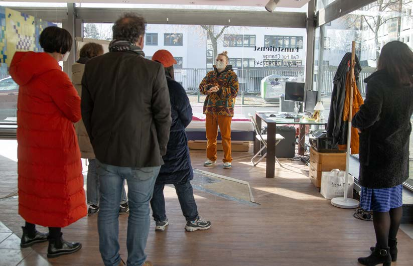
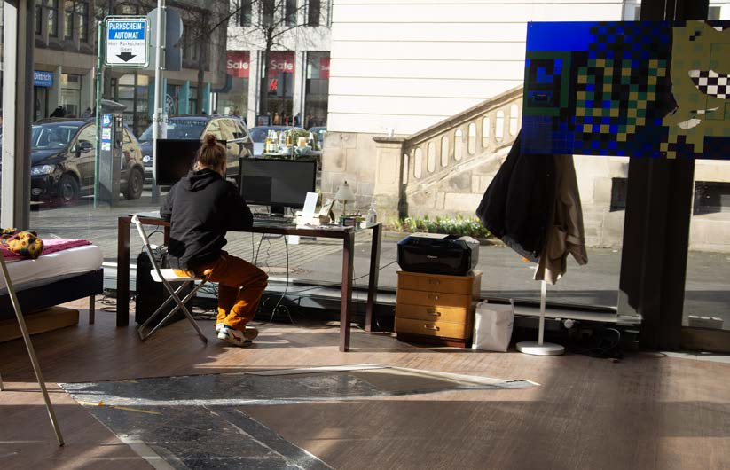
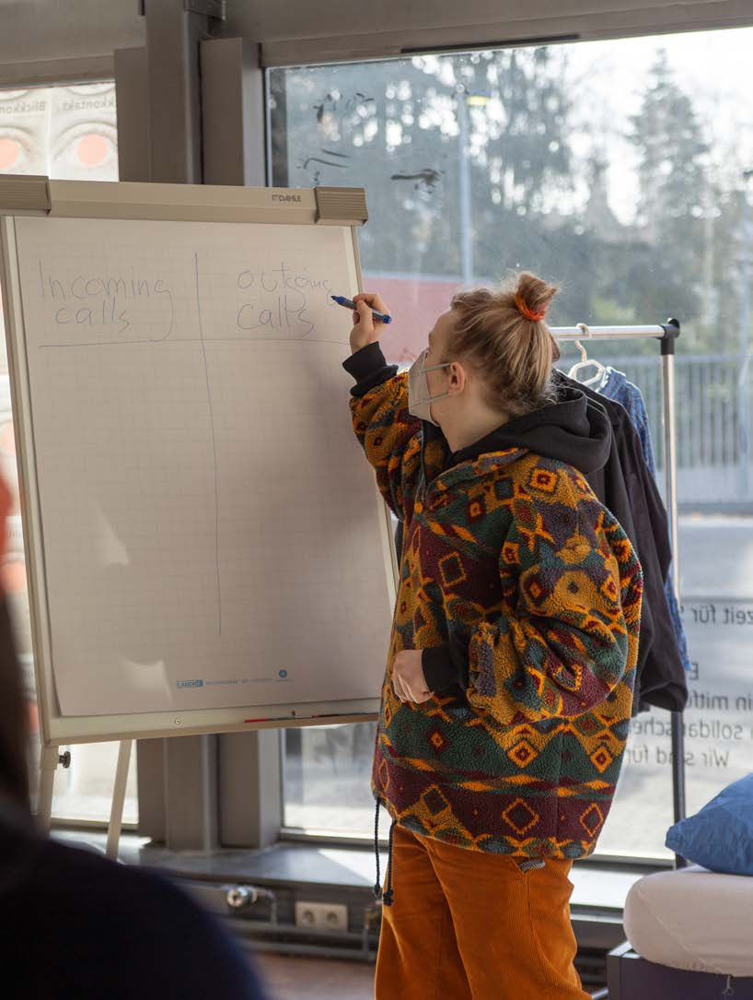

Kunstdienst
2022 · Performance
Kunstdienst is a performance by Nickii Schamborski, 2022.



About the work
Performance in Fulda with a 24/7 telephone hotline and a temporary shop.
Details
- Year
- 2022
- Type
- Performance
- Specs
- 24/7 telephone hotline, temporary shop
- Institution / place
- Fulda, Germany